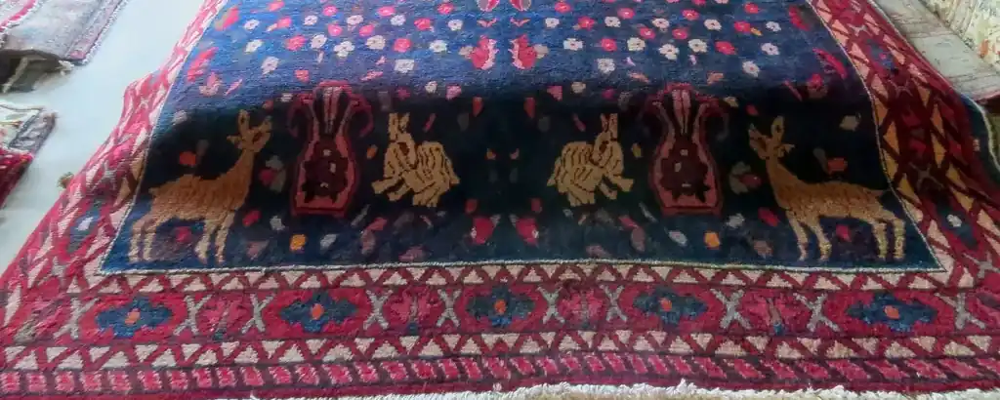
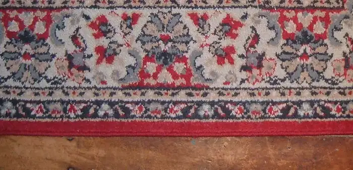
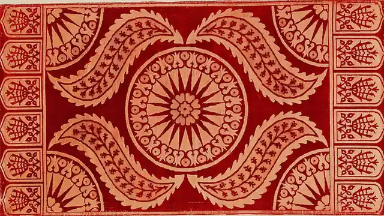

Rugs listed by size, knot count and fibre, not by story.
Every hand-knotted rug, runner and kilim cushion cover in the room carries a written note: its measurements to the centimetre, its knots per square decimetre, its pile height, the fibres it is made of, and the wear it already shows. One piece, one listing. When a piece leaves, its listing leaves with it.
Wool pile on a blue field, deer and rabbits among small flowers. Under every listing sits a note like the one on the rugs page: size, knots, pile, fibre, wear.
One piece, one listing
Size, knot count, pile height and fibre on every piece
Hand-knotted wool and kilim flatweave
No age, origin or investment claims
What is in the room
Hand-knotted rugs
Wool pile on a cotton or wool warp, in room sizes and smaller. Each rug is measured at its longest and its widest, and again at its narrowest, because a hand-knotted piece is rarely a true rectangle. The note says which figure is which.
Runners
Long, narrow pieces for a hallway or the side of a bed. The width matters more than the length: we list both, and we say how straight the piece runs, since a runner that bows is a different thing in a corridor.
Wool with silk highlights
Some pieces carry silk in the outlines of a motif or in a few flowers of the field. Silk takes dye differently and catches the light. The note says where the silk sits and, in words, how much of the pile it makes up.
Kilim cushion covers
Cut from older flatweave, backed in plain cotton and closed with a zip along one edge. Two covers cut from the same kilim will not match, and the listing says so. The insert size is written on every cover.
Rug pads
A pad cut a little smaller than the rug's own measurements, so the edges lie flat and the piece does not creep on a hard floor. A pad also takes some of the wear that would otherwise go into the knots.
Binding tape
Plain cotton tape for binding a worn edge. We sell the tape by the length of the piece; we do not sew it on. Sewing it on is repair, and repair is a job for a repairer, not for this room.
How a piece leaves the room
The room sells three kinds of thing: hand-knotted rugs and runners in wool, and in wool with silk highlights; kilim cushion covers cut from older flatweave; and the two plain goods that go with a rug, a pad and cotton binding tape. Every rug and every cover is one piece. It is measured, counted, photographed and written up before it is listed, and the note is the listing. Nothing on the page is a stock line that can be re-ordered.
A purchase runs the same way every time, from your first message to the piece on your floor.
You write, naming the piece from its listing, or describing the floor you want to cover and the colours you live with.
We answer from the mailbox with the piece's note, further photographs in daylight, close views of the pile and the back, and a plain yes or no on whether it is still in the room.
If you want it, we hold it for a short, stated window and mark the listing held. Nobody else is offered it while the window runs.
An invoice follows by e-mail. Once it is settled, the rug is rolled around a tube, wrapped, and either couriered anywhere in Canada or handed over here in Toronto.
At hand-over you unroll it and check it against the note. If it is not the piece the note describes, it comes back, and that is the whole of the returns policy.
What the room values is plain description. A rug is described by what can be measured and seen: its size, its knot density, its pile height, its fibres, the abrash where a dye lot changed, the corner that is lower than the rest, the selvedge that has been rebound. It is not described by a story about where it came from or whose hands made it, because those are claims we cannot stand behind from the rug alone.
What the room turns down is just as fixed. It does not clean, wash, repair, re-fringe or restore a rug, its own or anyone's. It does not write valuations, for insurance or for anything else. It does not sell machine-made rugs as hand-knotted; if a piece is machine-made the listing says so in the first line. It does not fit, lay or install anything, and it does not ship outside Canada.

A rug laid out flat on the floor of the room, lower border and fringe to the front, for measuring and photographing.

The edge of a piece: three border stripes and the bound selvedge, which is where wear shows first and where binding tape goes.

A cushion face, photographed flat and face up with its zip edge at the foot of the frame, which is how every cover is listed.A whole flatweave on boards, fringe at both ends. A piece too sound to cut stays a rug; a piece too worn to walk on becomes cushion covers.
Asked at the counter
Is this rug antique?
We do not say, and no listing will. Age is a claim that cannot be proved from the rug alone, so the note carries no date, no period and no word like old or antique. What it carries instead is what can be seen: the wear, the low pile in the walking line, the abrash where the dye changed between one weft and the next, and the fibres. Draw your own conclusions from those; we will not draw them for you.
Can you clean or repair a rug?
No. The room does not clean, wash, repair, re-fringe or restore rugs, including the ones it sells. We stock the plain cotton tape used to bind a worn edge, and the note on every piece tells you where the wear is, but the work itself belongs to a repairer. If a piece needs work before it can be used, the listing says so.
How do I measure for a runner?
Measure the length of hall floor you want covered, then the width of floor between the skirting boards. A runner should stop short of both ends and leave a band of floor showing along each side. The sizes page has a floor reckoner: type in the corridor and how much floor you want to see, and it does the subtraction for you.
Do I need a pad?
On a hard floor, yes, unless the rug sits under furniture heavy enough to hold it. A pad stops the piece creeping, keeps the edges flat so they do not catch a foot, and takes some of the wear that would otherwise go into the knots. On a fitted carpet a thin, grippy pad stops the rug walking. We cut pads a little under the rug's own measurements.
Will the colours run?
We cannot promise how a dye behaves in water, because we do not wash our pieces, which is one of the reasons we do not clean. What the note says is what can be seen dry: whether any colour has already bled into its neighbour, and where. Treat every piece as if its colours will run. A cushion cover should be spot-cleaned dry, never put through a wash.
Can you hold a piece for me?
Yes, for a short, stated window, once you have written and we have confirmed the piece is still in the room. While it is held the listing is marked held and it is offered to nobody else. If the window passes without word from you, it goes back on. One piece, one listing, one person at a time.
Do you ship outside Ontario?
Across Canada, yes. Rugs travel rolled around a tube and wrapped; cushion covers travel flat. We do not ship outside Canada, and we do not come to a house to fit or lay anything: the piece arrives rolled and you unroll it. Within Toronto, hand-over in person can be arranged by writing.
Ask about a piece
One piece, one listing, one straight answer.
Write with the name of a piece from its listing, or with the floor you want to cover, and you will get its note, more photographs, and a plain yes or no on whether it is still here.
The only address the room uses. Every listing, every hold and every invoice goes through it.
When it is read
Tuesday to Saturday, from ten in the morning until six in the evening. On Sunday and Monday it is not read, and a message sent then is answered on Tuesday.
Where the room is
Toronto, Ontario. Every piece is measured and photographed here, and a time to see one in person can be arranged by writing. Pieces are couriered anywhere in Canada and nowhere outside it.